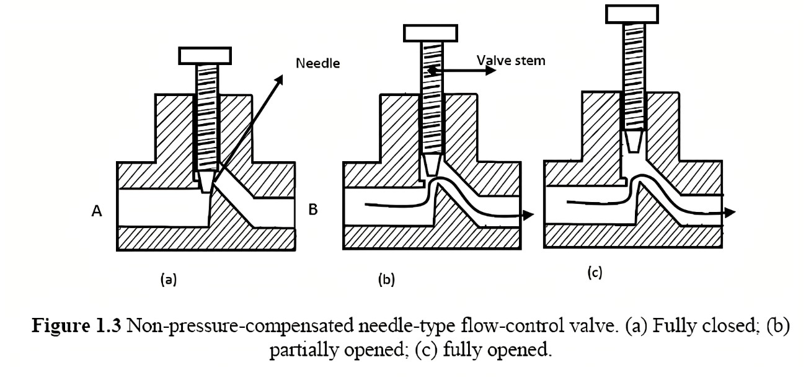

Needle valves are linear motion valves which are used in systems for control of small volumes where continuous throttling is required for the flow regulation. Needle valves are somewhat similar to globe valves in design with the biggest difference being their sharp needle-like disk.
Needle valves are actuated by linear or multi-turn actuators. This could be pneumatic or hydraulic using a piston or a diaphragm. Linear actuation is also possible using electric and manual actuators. This could be manual through the use of a multi-turn hand-wheel, or electric using a motor and gear box attached to a rack and pinion or scotch yolk to convert between rotational and linear motion.